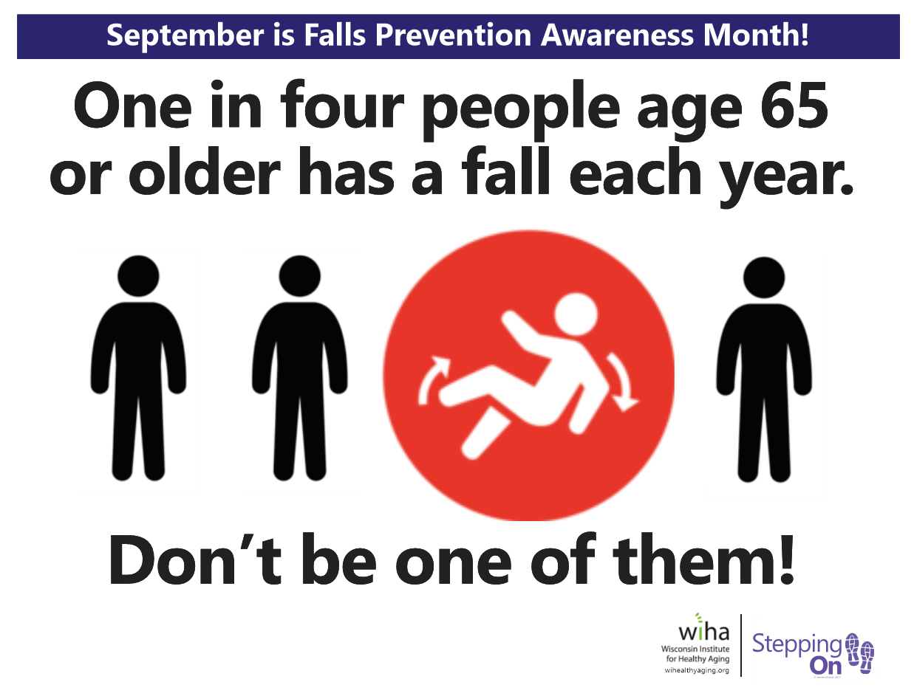

According to public-health data, approximately one in four adults aged 65 and older falls each year in the United States. Falls are the second leading cause of unintentional injury deaths worldwide and generate tens of billions of dollars in medical costs annually.[1]

Common solutions include wearable pendants with buttons, pull cords in bathrooms, and medical-alert watches that use accelerometers. These approaches have important limitations:
Ambient (non-wearable) computer vision systems can continuously observe a living space, detect a fall within seconds, and send an alert together with a short privacy-protected video clip. Because the camera is fixed in the environment, the senior does not need to remember to wear or charge anything.
Research groups and companies have therefore focused on deep-learning vision pipelines that run either on edge devices or in a secure local “lockbox” so that raw video never needs to leave the home.[2]
The following pages explain the technical pipeline, the algorithms that make real-time detection possible, concrete systems that have been built, and the remaining open challenges.